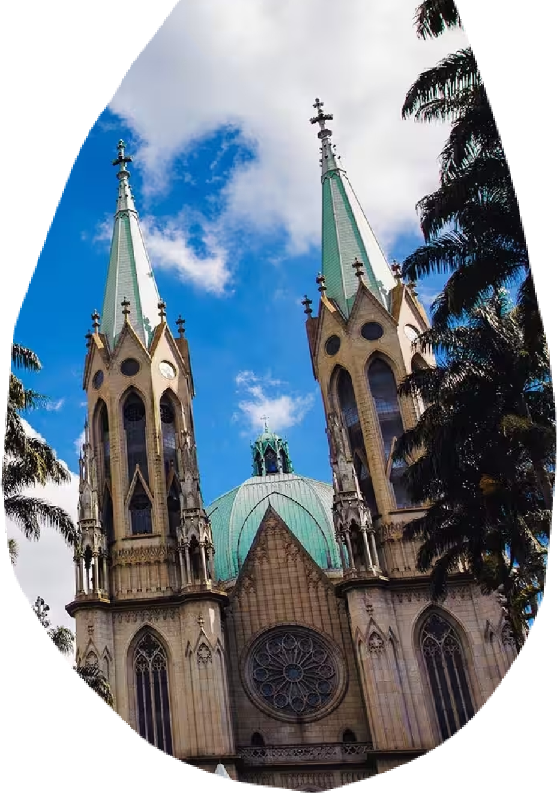

<div class="voc-sabia-polo-mooca">
    <div class="div">
      <div class="overlap">
        <div class="overlap-group">
          <div class="group">
            <div class="overlap-group-2">
              <div class="voc">VOCÊ</div>
              <div class="sabia">SABIA?</div>
            </div>
          </div>
          <div class="paragrafo-com-scroll">
            <p class="a-atual-identidade">
                Mais do que um cartão postal da cidade de São Paulo, a Catedral da Sé, localizada em frente ao marco zero da cidade, 
                é uma cápsula no tempo que preserva arquitetura neogótica e obras de arte sacra; e um abrigo de fé e acolhimento 
                para todos os povos.&nbsp;&nbsp;<br /><br />
                Uma sentinela imponente que observa a cidade em constante transformação. Sua arquitetura neogótica, com torres majestosas
                e vitrais coloridos, evoca um sentimento de grandiosidade e reverência.&nbsp;&nbsp;<br /><br />
                A Catedral da Sé é um verdadeiro museu de arte sacra. Esculturas, pinturas e mosaicos retratam cenas da vida de 
                Jesus Cristo e dos santos, convidando à contemplação e à devoção. O altar-mor, em mármore branco, é uma obra de 
                arte monumental que impressiona pela sua beleza e imponência. Acolhe a todos, independentemente de crenças ou origens. 
                É um espaço de inclusão e acolhimento, onde todos são bem-vindos para celebrar a fé e encontrar comunidade.&nbsp;&nbsp;<br /><br />
                É um dos principais símbolos da cidade de São Paulo; um ponto de referência para turistas e paulistanos; um local de visita 
                obrigatória para quem deseja conhecer a alma da cidade.
            </p>
          </div>
          
        </div>
        <div class="overlap-2">
           
        </div>
      </div>
      <div class="vector-wrapper"></div>
      
      
      
      <div class="img-wrapper"></div>
    </div>
</div>
